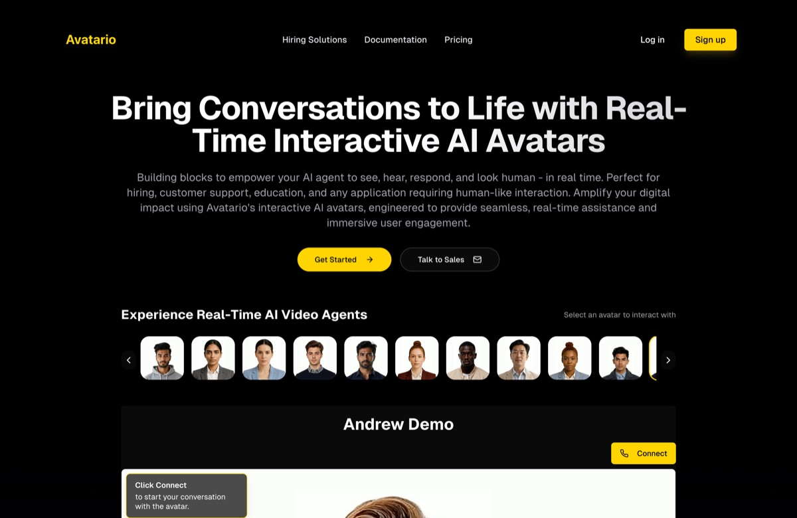
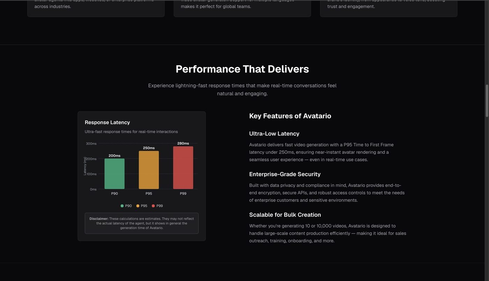

01The challenge
Avatario gives AI agents the ability to see, hear, respond and look human — in real time. It's built for hiring screens, customer support and education: situations where a disembodied chatbot feels cold, but a human-like face changes the dynamic entirely.
Real-time avatars come with a unique design risk: the uncanny valley. Done wrong, a near-human face is unsettling. Done right, it builds trust faster than any chat window. Every design decision — avatar framing, conversation UI, connection states — had to land on the right side of that line.
02My role
- Product UI — designed the dashboard and core experience for the Avatario platform as part of the Listen2it product family.
- Avatar experience — the selection carousel, live demo flow ("click Connect to start your conversation") and in-call interface.
- Synthetic avatar production — applied the AI generation pipeline I built for Voomo (Midjourney, Runway ML, Freepik) to produce consistent, professional avatar imagery.
- Onboarding UX strategy — restructuring first-run so the avatar guide and the interface she explains stop competing for the same screen.
- Agent templates — currently designing the template layer for the Create Agent flow, so a new agent starts from a working shape instead of an empty form.
- Trust-building details — onboarding cues, status indicators and graceful loading states that keep a real-time AI conversation feeling stable.
03Process & key decisions
Demo before signup. The strongest argument for a real-time avatar is talking to one. We placed a live, interactive avatar directly on the homepage — no account, no friction. The product demos itself in the first ten seconds.
Professional, not perfect. Avatar imagery deliberately uses business-like framing and natural expressions rather than chasing photorealistic perfection — sidestepping the uncanny valley by setting the right expectation: this is a professional digital assistant, not a fake human.
Three layers, because the guide was covering the lesson. Aria floats on top of the product she is teaching, so guidance and subject fought for the same pixels — users dismissed her or lost the screen underneath. I split onboarding into an intent-capture screen before the workspace loads, a persistent sidebar rail that carries progress out of the overlay, and Aria repositioned as support on demand rather than a guide you sit through.
Ask for the permission at the moment it makes sense. Chrome's screen-share prompt was firing before anyone understood why it was needed, and a cold permission dialog is the fastest way to lose someone in their first minute. It became an inline button at the point of use, where the reason is self-evident.
Designing the waiting. Real-time AI has latency. Connection states, "thinking" cues and conversational pacing were designed as carefully as the happy path, because in live conversation, silence without feedback reads as failure.


04Outcome
Avatario shipped with a try-it-first experience that turns its hardest design problem — trusting an AI face — into its best sales tool. Together with Voomo and Listen2it, it completes a product family where I've designed every user-facing surface.